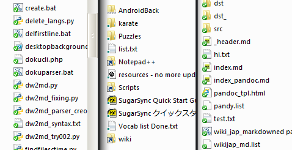

Windows 7: Arreglar los iconos en Explorer
Con esta era de usar programitas varios para sincronizar, otros para control de código, y otros que no puedo recordar ahora; es necesario tener los overlay icons en Windows Explorer:

Personalmente se me desaparecían y, aunque limpiara la cache de los programas, nunca aparecían. Hay algunos que podes vivir sin ellos, pero otros no. Capaz instalaste un programa y te desplazó los de otro.
¿Pero cuál es el problema? Que los genios de Microsoft limitan la cantidad de iconos que se pueden usar a unos meros 11 iconos totales para el usuario. WHAT THE HELL.
Para arreglar el tema hay que pasar por el registro. Entrá al bonito regedit y navegá hasta HKEY_LOCAL_MACHINE\SOFTWARE\Microsoft\Windows\CurrentVersion\Explorer\ShellIconOverlayIdentifiers\. Antes de tocar mano, hacete un backup del .reg.
La idea es que de los 30 que debes tener, solo elegis los 11 mas importantes. ¿Cómo decidis la importancia? renombrandolos, porque Windows los elige por orden alfabético. Poneles números adelante o "z", "x", "y", esas letras que no se usan. Yo prioricé algunos de TortoiseSVN, un par de Dropbox, y el resto como sea el orden.
Una vez que estás feliz, reiniciá el explorer.exe: Administrador de tareas > matar explorer1. Después lo inicias en Nueva tarea (o si queres desloguearte y loguearte, si queres reiniciar también, pero no hace falta).
Fuente: oliverpearmain: Dropbox and TortoiseSVN icons overlays in harmony
-
Kill, kill, kill! ↩
How to comment
- Tweet with an URL to this post (
http://blog.quinzi.com.ar/windows7-shell-icons/) - Write a post linking here and send me a Webmention.
- Commenting with disqus